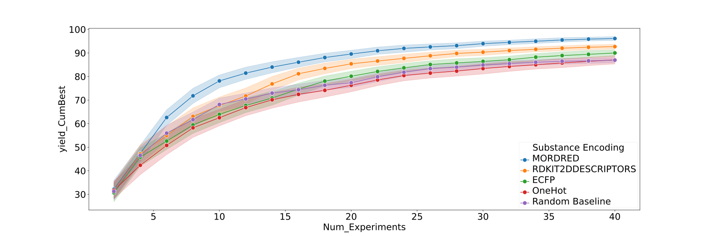

Parameters¶
Parameters are fundamental for BayBE, as they configure the SearchSpace and serve
as the direct link to the controllable variables in your experiment.
Before starting an iterative campaign, the user is required to specify the exact
parameters they can control and want to consider in their optimization.
Parameter Names
BayBE identifies each parameter by a name. All parameter names in one
campaign must be unique.
BayBE distinguishes two parameter types, because they need to be treated very differently under the hood: Discrete and continuous parameters.
Continuous Parameters¶
NumericalContinuousParameter¶
This is currently the only continuous parameter type BayBE supports.
It defines possible values from a numerical interval called
bounds, and thus has an infinite amount of possibilities.
Unless restrained by Constraints, BayBE will consider any possible parameter value
that lies within the chosen interval.
from baybe.parameters import NumericalContinuousParameter
NumericalContinuousParameter(
name="Temperature",
bounds=(0, 100),
)
Discrete Parameters¶
A discrete parameter has a finite set of possible values that can be recommended. These values can be numeric or label-like (i.e. strings) and are transformed internally before being ingested by the surrogate model.
Parameter Encoding
To make labels usable in machine learning, we assign each label one or more numbers.
This process is called encoding. While there are trivial ways of doing this
(e.g. one-hot encoding), BayBE also provides methods to avoid problematic biases and
even introduce useful information into the resulting latent number space. For different
parameters, different types of encoding make sense. These situations are reflected by
the different discrete parameter types BayBE offers.
For Label-Like Parameters: Values and Active Values
After a discrete parameter was created, its possible values are accessible via the
values
property. All label-like parameters also support specifying
active_values
, which
must be a subset of values. active_values specify which labels are considered
for recommendation. Labels that are in values but not in active_values can be
part of measurements, but won’t be recommended. Using this mechanism, you can configure
a campaign to being able to ingest historical data, while running it only in a
currently interesting subset of labels.
NumericalDiscreteParameter¶
This is the right type for parameters that have numerical values.
We support sets with equidistant values like (1, 2, 3, 4, 5) but also unevenly
spaced sets of numbers like (0.2, 1.0, 2.0, 5.0, 10.0, 50.0).
from baybe.parameters import NumericalDiscreteParameter
NumericalDiscreteParameter(
name="Temperature",
# you can also use np.arange or similar to provide values
values=(0, 10, 20, 30, 40, 50),
)
CategoricalParameter¶
A CategoricalParameter supports sets of strings as labels.
This is most suitable if the experimental choices cannot easily be translated into a
number.
Examples for this could be vendors like ("Vendor A", "Vendor B", "Vendor C") or
post codes like ("PO16 7GZ", "GU16 7HF", "L1 8JQ").
Categorical parameters in BayBE can be encoded via integer or one-hot encoding.
For some cases, such basic forms of encoding make sense, e.g. if we had a parameter
for a setting with values
("low", "medium", "high"), an integer-encoding into values (1, 2, 3) would
be reasonable.
from baybe.parameters import CategoricalParameter
CategoricalParameter(
name="Intensity",
values=("low", "medium", "high"),
active_values=(
"low", # optional, only combinations with Intensity=low will be recommended
),
encoding="INT", # optional, uses integer encoding as described above
)
However, in other cases, these encodings would introduce undesired biases to the model.
Take, for instance, a parameter for a choice of solvents with values
("Solvent A", "Solvent B", "Solvent C"). Encoding these with (1, 2, 3) as
above would imply that “Solvent A” is more similar to “Solvent B” than to “Solvent C”,
simply because the number 1 is closer to 2 than to 3.
Hence, for an arbitrary set of labels, such an ordering cannot generally be assumed.
In the particular case of substances, it not even possible to describe the similarity
between labels by ordering along one single dimension.
For this reason, we also provide the SubstanceParameter, which encodes labels
corresponding to small molecules with chemical descriptors, capturing their similarities
much better and without the need for the user to think about ordering and similarity
in the first place.
This concept is generalized in the CustomDiscreteParameter, where the user can
provide their own custom set of descriptors for each label.
SubstanceParameter¶
Instead of values, this parameter accepts data in form of a dictionary. The
items correspond to pairs of labels and SMILES.
SMILES are string-based representations of molecular structures.
Based on these, BayBE can assign each label a set of molecular descriptors as encoding.
For instance, a parameter corresponding to a choice of solvents can be initialized with:
from baybe.parameters import SubstanceParameter
SubstanceParameter(
name="Solvent",
data={
"Water": "O",
"1-Octanol": "CCCCCCCCO",
"Toluene": "CC1=CC=CC=C1",
},
active_values=[ # optional, recommends only water and toluene as solvent
"Water",
"Toluene",
],
encoding="MORDRED", # optional
decorrelate=0.7, # optional
)
The encoding defines what kind of descriptors are calculated using the
scikit-fingerprints package.
It can be specified either by passing the corresponding SubstanceEncoding member
(click to see full list of options) or its string representation, e.g. use
SubstanceParameter.MORDRED
or its string alias "MORDRED" to select the MordredFingerprint.
Here are examples of a few popular fingerprints:
ECFP: Extended Connectivity FingerPrint, which is a circular topological fingerprint similar to Morgan fingerprint.MORDRED: Chemical descriptor based fingerprint.RDKIT: The RDKit fingerprint, which is based on hashing of molecular subgraphs.
You can customize the fingerprint computation by passing arguments of the corresponding
scikit-fingerprints class to the kwargs_fingerprint argument the SubstanceParameter constructor.
Similarly, for fingerprints requiring conformers,
the configuration options for conformer computation can be specified via kwargs_conformer.
from baybe.parameters import SubstanceParameter
SubstanceParameter(
name="Solvent",
data={
"Water": "O",
"1-Octanol": "CCCCCCCCO",
"Toluene": "CC1=CC=CC=C1",
},
encoding="ECFP",
kwargs_fingerprint={
"radius": 4, # Set maximum radius of resulting subgraphs
"fp_size": 1024, # Change the number of computed bits
},
)
These calculations will typically result in 500 to 1500 numbers per molecule.
To avoid detrimental effects on the surrogate model fit, we reduce the number of
descriptors via decorrelation before using them.
For instance, the decorrelate option in the example above specifies that only
descriptors with a correlation lower than 0.7 to any other descriptor will be kept.
This usually reduces the number of descriptors to 10-50, depending on the specific
items in data.
Warning
The descriptors calculated for a SubstanceParameter were developed to describe
small molecules and are not suitable for other substances. If you deal with large
molecules like polymers or arbitrary substance mixtures, we recommend to provide your
own descriptors via the CustomDiscreteParameter.
In the following example from an application you can see the outcome for treating the solvent, base and ligand in a direct arylation reaction optimization (from Shields, B.J. et al.) with different chemical encodings compared to one-hot and a random baseline:

Optional Dependency
The SubstanceParameter is only available if BayBE was installed with the
additional chem dependency.
CustomDiscreteParameter¶
The encoding concept introduced above is generalized by the
CustomDiscreteParameter.
Here, the user is expected to provide their own descriptors for the encoding.
Take, for instance, a parameter that corresponds to the choice of a polymer.
Polymers are not well represented by the small molecule descriptors utilized in the
SubstanceParameter.
Still, one could provide experimental measurements or common metrics used to classify
polymers:
import pandas as pd
from baybe.parameters import CustomDiscreteParameter
descriptors = pd.DataFrame(
{
"Glass_Transition_TempC": [20, -71, -39],
"Weight_kDalton": [120, 32, 241],
},
index=["Polymer A", "Polymer B", "Polymer C"], # put labels in the index
)
CustomDiscreteParameter(
name="Polymer",
data=descriptors,
active_values=( # optional, enforces that only Polymer A or C is recommended
"Polymer A",
"Polymer C",
),
decorrelate=True, # optional, uses default correlation threshold
)
With the CustomDiscreteParameter, you can also encode parameter labels that have
nothing to do with substances.
For example, a parameter corresponding to the choice of a vendor is typically not
easily encoded with standard means.
In BayBE’s framework, you can provide numbers corresponding e.g. to delivery time,
reliability or average price of the vendor to encode the labels via the
CustomDiscreteParameter.
TaskParameter¶
Often, several experimental campaigns involve similar or even identical parameters but
still have one or more differences.
For example, when optimizing reagents in a chemical reaction, the reactants remain
constant, so they are not parameters.
Similarly, in a mixture development for cell culture media, the cell type is fixed and
hence not a parameter.
However, once we plan to mix data from several campaigns, both reactants and cell
lines can also be considered parameters in that they encode the necessary context.
BayBE is able to process such context information with the TaskParameter.
In many cases, this can drastically increase the optimization performance due to the
enlarged data corpus.
See also
For details, refer to transfer learning.